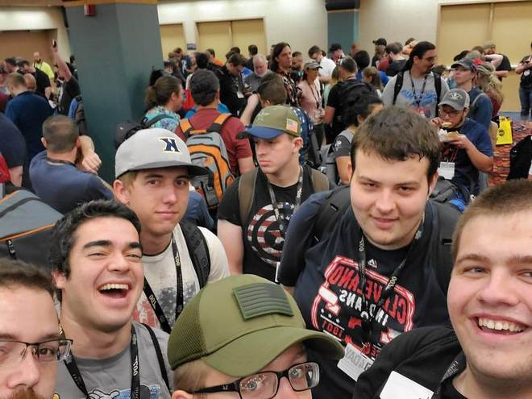

Images

In early August this year, my buddies and I all got to attend the Gencon Board Game Festival in Indianapolis, Indiana.
:max_bytes(150000):strip_icc():format(webp)/GettyImages-523757096-580f91435f9b58564c063908.jpg)
When I was younger I got to take over the care of my teacher's pet when she retired. Ever since, I have had a fasincation with newts.

We got my dog Baxter a couple years ago, and we still have no idea what actual breed he is. We love him regardless.